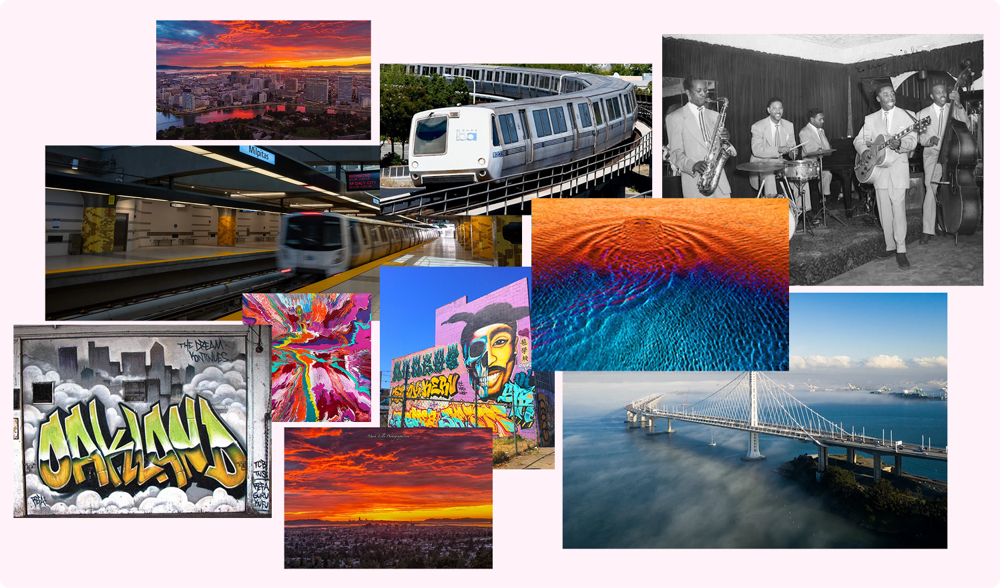
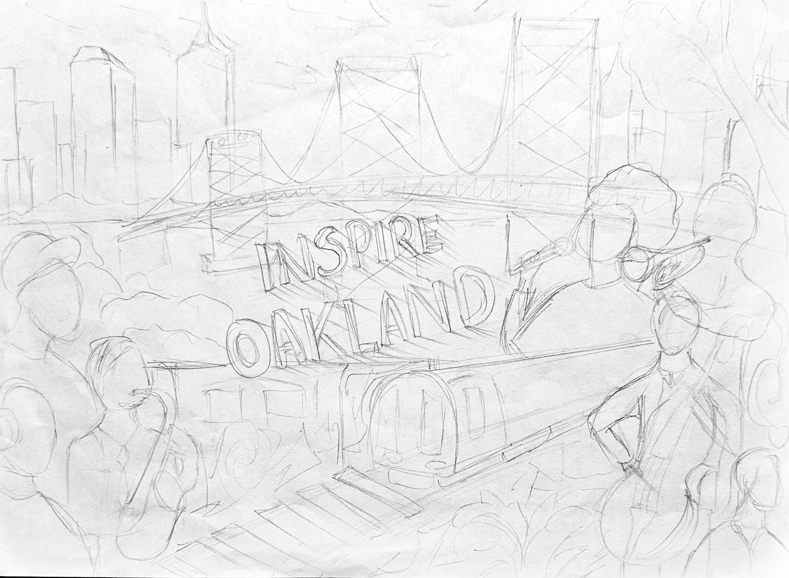
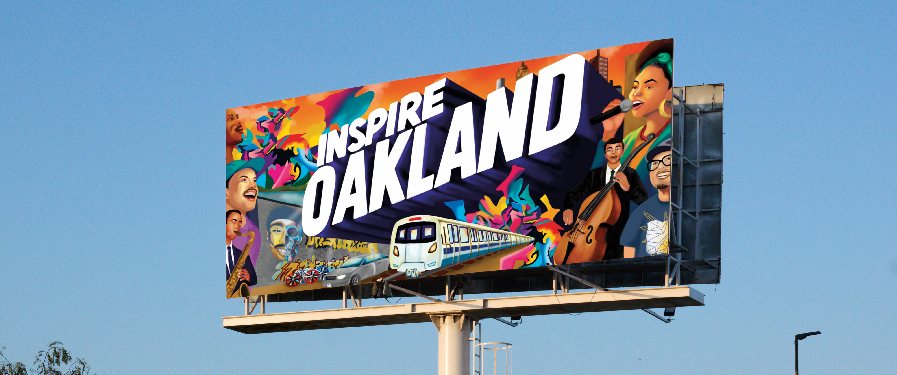

Inspire Oakland
The Foreigner's Perspective.
Design a billboard that celebrates Oakland's creative spirit — through the eyes of someone who arrived here and found a city unlike any other.
Design a billboard that celebrates Oakland's creative spirit — through the eyes of someone who arrived here and found a city unlike any other.
BRIDGEGOOD's annual Inspire Oakland challenge invites student designers across the Bay Area to create a campaign celebrating the city's culture.
My angle was personal. As someone who came to Oakland from somewhere else, the city hit differently. The energy, the BART train, the graffiti walls, the jazz, the bridge at sunset — none of it was what I expected. That became the concept: the foreigner's perspective.
"What about Oakland inspires you?"
BRIDGEGOOD design prompt
Final LED — displayed in Oakland, CA
Before touching a brush, I researched what outsiders and locals both associate with Oakland: the Bay Bridge, BART, graffiti culture, jazz roots, a wildly diverse community of artists and workers.

Research moodboard — Oakland skyline, BART, Bay Bridge, graffiti murals, jazz musicians
BART isn't just transport — it's the connective tissue of the Bay. The train appears in the final artwork as a symbol of movement and access.
Oakland's street art tradition is documentation, not vandalism. The graffiti wall in the composition sits at ground level — where the city actually lives.
From jazz to hip-hop to classical, Oakland's musicians represent the city's multiculturalism. The illustration puts performers of every genre side by side.
The palette came directly from Oakland's sky at golden hour — deep oranges bleeding into magenta, the purple of the Bay Bridge silhouette at dusk, the navy of BART station shadows. Every color had a source in the city.
12-color palette derived from Oakland's golden hour sky and BART station palette
The constraint of a billboard is brutal: you have about three seconds of attention from a moving car. The composition had to read instantly — a bold typographic anchor, a warm explosive sky, and a cast of characters that represents the actual diversity of Oakland's creative community.

Initial concept sketches — figuring out the composition
"A billboard has three seconds. Every element either earns its place or it goes."
Process note, early ideationThe design went through two main billboard iterations. The biggest shift was learning that more people didn't mean more representation — it meant visual noise. The final composition is more selective and more powerful for it.

The first version included the full Bay Bridge and a larger cast of characters. Visually ambitious but crowded — the Bay Bridge competed with the typography for attention, and the composition didn't have a clear focal point for a fast read.

The bridge was removed to let the sky breathe. The cast was refined to key characters — the sax player, the singer, the cellist and Shaun Tai (Executive Director of BRIDGEGOOD) — each representing a distinct thread of Oakland's culture. The result reads clearly at distance and rewards a closer look.

Final billboard artwork — horizontal format
The final illustration was adapted for three formats: the primary billboard, an LED digital display, and a square in-app social media format.

In-App / Social Square — recomposed for vertical read

LED Digital Display — higher contrast, dark border
BRIDGEGOOD's 15th annual Inspire Oakland challenge drew participants from 40 schools across the Bay Area. Being selected as the best design meant the work was printed on a real billboard — and receiving the Certificate of Achievement from BRIDGEGOOD's Executive Director and Board President, co-signed by Adobe, was the kind of recognition that makes it real.
My design from was printed at full scale and displayed on a billboard in Oakland, California. Seeing your illustration — designed on a screen, in a studio — printed twelve feet tall on a street you can drive past is a different kind of experience than any screen can replicate. This design was also displayed year round at the Oakland International Airport.
Live billboard — Oakland, CA · OUTFRONT Media
Live LED Display — Oakland, CA · OUTFRONT Media
Team photo — finalist designers
Live LED — Oakland International Airport, CA
There were 800+ entries celebrating Oakland. The ones that stood out had a specific point of view. "The Foreigner's Perspective" wasn't a gimmick, it was the only honest angle I had.
The warm orange-to-purple gradient reads "Oakland sunset" before you've seen a single face or read a single word. In graphic design, atmosphere arrives before information.
You don't truly understand scale until your illustration is twelve feet tall on a street. What works on screen isn't always what works at that size — and vice versa.